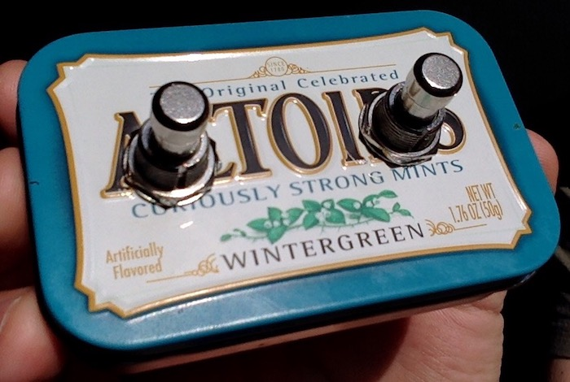
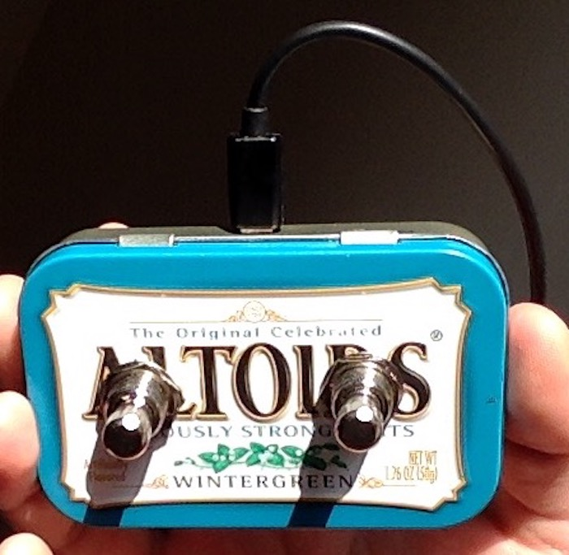
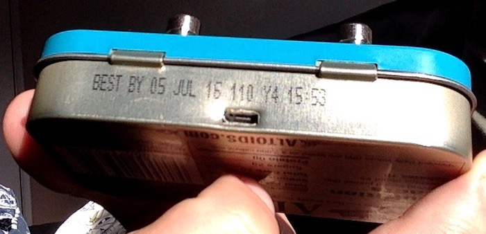
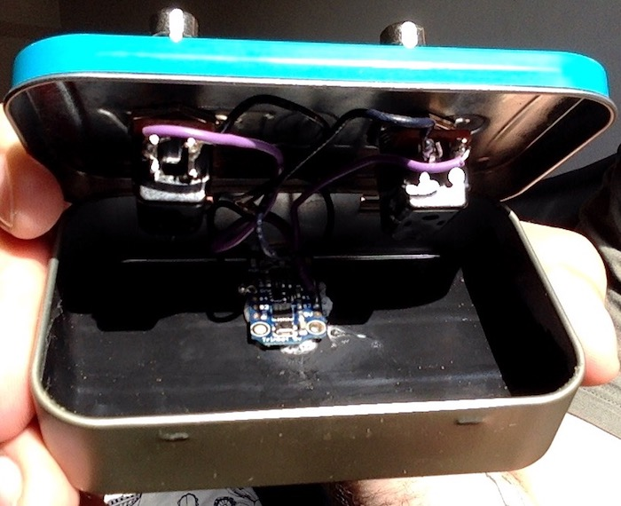

Programmable Foot Keyboard
A programmable foot keyboard using Adafruit’s Trinket.
Documentation |
| |
License |
| |
Code of Conduct |
| |
Source |
| |
Bug Reports |
| Write emails to programmable-foot-keyboard@leafac.com. |
Contributions |
| Send patches and pull requests via email to programmable-foot-keyboard@leafac.com. |
1 Overview




Do it yourself programmable foot keyboard. It connects to the computer via USB and acts as a regular keyboard. It is possible to program which keys it sends when pressing the switches. I use it to scroll tabs when playing the guitar, to start and stop recording, as modifiers in text editors (for example, holding Meta and Control in Emacs), and more.
2 Shopping List
The total cost of the project is around $10:
Adafruit’s Trinket: The mini microcontroller that drives the hardware. Make sure to buy the 5V, not the 3V or the project will not work. It is available for sale directly from the manufaturer Adafruit, but I bought it on eBay because the shipping was cheaper.
SPST: Single pole, single throw. Only two terminals.
Normally open: The circuit is open when when the button is unpressed and closed (current goes through) when the button is pressed.
Momentary: The circuit stays closed only while the button is pressed—think of a regular key on a computer keyboard, as opposed to a latching switch which works like Caps Lock.
Footswitches: SPST, normally open, momentary footwitches. I installed two and the microcontroller can handle one more. The other two GPIO (#3 and #4) are shared with the USB interface, which is used to the connect to the computer, so they are not available.
Enclosure: An Altoids tin.
Micro-B USB cable.
3 Setup
The wiring is the same as in this project. One connector of each of the buttons goes to ground (GND) and the other connectors go to #0 and #2. Power comes from the computer via the USB cable, no extra source is necessary.
Drill holes in the Altoids tin for the buttons and the USB port using a Dremel and a screwdriver. Solder the circuit and glue the microcontroller next to the side.
Install the library TrinketKeyboard to the Arduino IDE.
Upload the code to the microcontroller using the Arduino IDE following these instructions.
4 Usage
Each of the buttons acts as a key on the computer keyboard. Pressing both buttons together changes to a different bank and the buttons act as different keys on the computer keyboard. Pressing both buttons and holding for a few seconds resets to the initial bank.
Bank |
| Left button |
| Right button |
| Purpose |
0 |
| ↑ |
| ↓ |
| Scroll |
1 |
|
| R |
| Start/stop recording | |
2 |
| ⇧ ^ ⇥ |
| ^ ⇥ |
| Switch tabs |
3 |
| ⇧ ⌘ ⇥ |
| ⌘ ⇥ |
| Switch applications |
5 Configuration
Configure by changing the source code and uploading it again.
6 References
Trinket USB Keyboard. Adafruit.